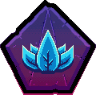

My primary goal is to have fun. My secondary goal is to earn points on my ironman for the cosmetics. Particular aims are as follows:
On this one i do wilderness, big dps, and i raid with the bois and gorls.
On this one i do clues and Echo Sol Heredit.